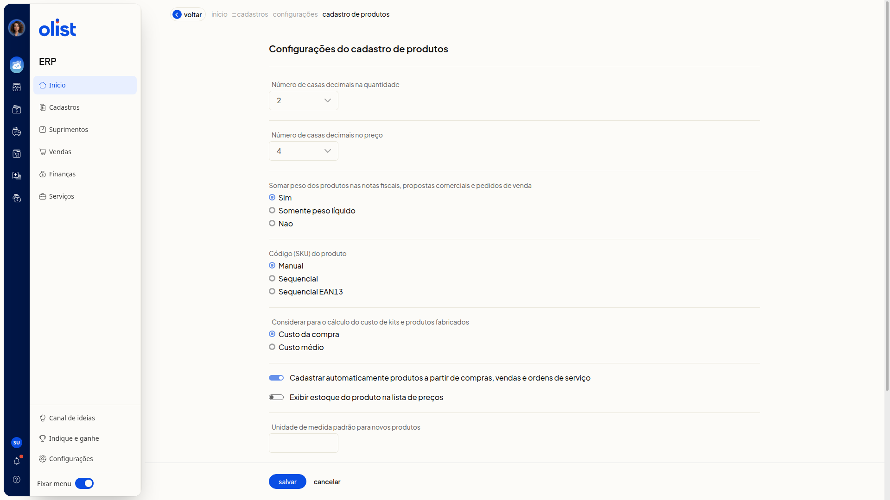
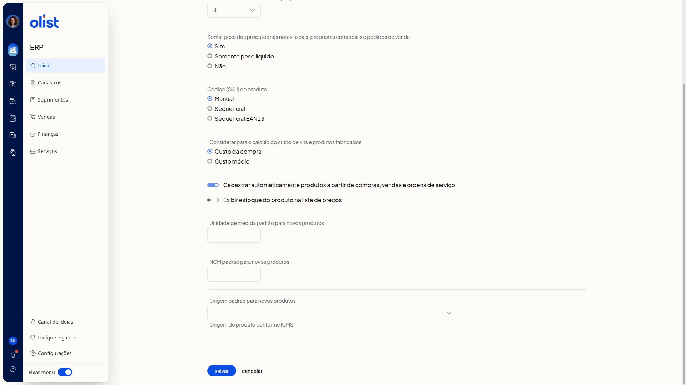

Configurações do cadastro de produtos
A tela Configurações do cadastro de produtos do ERP da Olist reúne, em uma única sequência e sem grupos nomeados, os parâmetros do cadastro de produtos. Nela você ajusta o número de casas decimais da quantidade e do preço, se o peso dos produtos é somado nas notas fiscais, propostas comerciais e pedidos de venda, como o código (SKU) é gerado, o cálculo do custo de kits e produtos fabricados, o cadastro automático a partir de compras, vendas e ordens de serviço, a exibição do estoque na lista de preços e a unidade, o NCM e a origem padrão dos novos produtos.
Importante
Só quem tem permissão para configurar cadastros de produtos acessa esta tela. A opção Considerar para o cálculo do custo de kits e produtos fabricados só aparece para quem possui os módulos de preço de custo de produtos e de DRE.
Como acessar
Acesse Configurações > Configurações ERP no menu lateral e, na aba Cadastros, clique em Configurações do cadastro de produtos.
Pré-requisitos
- Autenticação no ERP: é preciso estar autenticado para abrir a tela.
- Permissão para configurar cadastros de produtos: só quem tem essa permissão acessa Configurações do cadastro de produtos.
- Item Configurações no menu lateral: ele precisa estar visível para você seguir o caminho de acesso.
Configurações do cadastro de produtos
Nenhum parâmetro exibe marcador de obrigatoriedade. O único texto de ajuda é Origem do produto conforme ICMS, abaixo de Origem padrão para novos produtos.

- Número de casas decimais na quantidade: escolha 0, 1, 2, 3 ou 4.
- Número de casas decimais no preço: escolha de 0 a 10.
- Somar peso dos produtos nas notas fiscais, propostas comerciais e pedidos de venda: escolha Sim, Somente peso líquido ou Não.
- Código (SKU) do produto: escolha Manual, Sequencial ou Sequencial EAN13.
- Considerar para o cálculo do custo de kits e produtos fabricados: escolha Custo da compra ou Custo médio.
- Cadastrar automaticamente produtos a partir de compras, vendas e ordens de serviço: ligue ou desligue o interruptor.
- Exibir estoque do produto na lista de preços: ligue ou desligue o interruptor.
- Unidade de medida padrão para novos produtos: informe a unidade no campo.
- NCM padrão para novos produtos: informe o NCM no campo.
- Origem padrão para novos produtos: selecione a origem. Abaixo do campo, o texto de ajuda é Origem do produto conforme ICMS. As opções são:
- 0 - Nacional, exceto as indicadas nos códigos 3 a 5
- 1 - Estrangeira - Importação direta, exceto a indicada no código 6
- 2 - Estrangeira - Adquirida no mercado interno, exceto a indicada no código 7
- 3 - Nacional, mercadoria ou bem com Conteúdo de Importação superior a 40% e inferior ou igual a 70
- 4 - Nacional, cuja produção tenha sido feita em conformidade com os processos produtivos básicos de que tratam as legislações citadas nos Ajustes
- 5 - Nacional, mercadoria ou bem com Conteúdo de Importação inferior ou igual a 40
- 6 - Estrangeira - Importação direta, sem similar nacional, constante em lista da CAMEX
- 7 - Estrangeira - Adquirida no mercado interno, sem similar nacional, constante em lista da CAMEX
- 8 - Nacional, mercadoria ou bem com Conteúdo de Importação superior a 70
No final da página estão os botões salvar e cancelar e o link Voltar. Ao terminar, clique em salvar.

Links relacionados
Se precisar de ajuda com estas configurações, fale com o suporte.